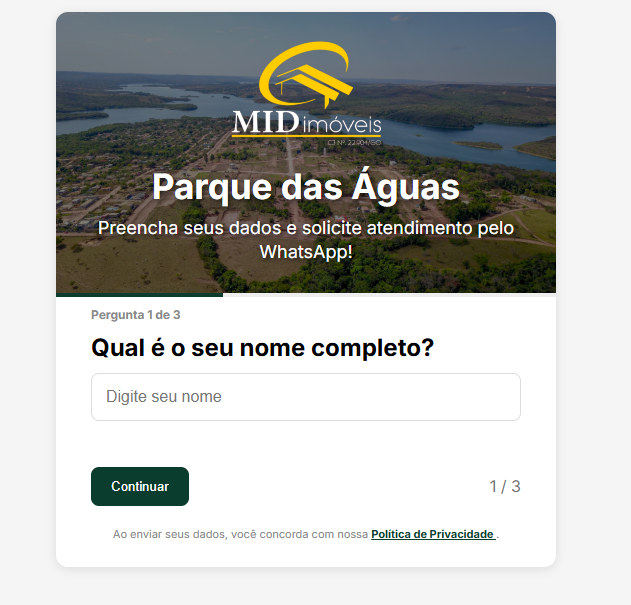

Formulários multietapas
Desenvolvimento de interfaces responsivas com etapas de preenchimento, validação de campos e experiência adaptada para computadores e dispositivos móveis.
Desenvolvimento de formulários inteligentes de múltiplas etapas, com identificação da origem dos contatos, captura de parâmetros de campanhas e integração com sistemas de automação e análise de dados.
A captação de leads por campanhas digitais exige mais do que o recebimento de nomes, telefones e e-mails. Também é importante identificar a origem de cada contato, a campanha responsável pela conversão e a página utilizada.
Sem essas informações organizadas, torna-se mais difícil acompanhar o desempenho das campanhas, automatizar atendimentos e avaliar a eficiência das estratégias de marketing.
A solução combina formulários personalizados, JavaScript, identificação de origem e integrações com ferramentas de marketing e automação.
Desenvolvimento de interfaces responsivas com etapas de preenchimento, validação de campos e experiência adaptada para computadores e dispositivos móveis.
Captura de parâmetros UTM, identificadores de campanhas, página de origem e outras informações necessárias para contextualizar a entrada dos leads.
Envio estruturado dos dados para ferramentas de automação e sistemas comerciais, permitindo registrar informações e iniciar fluxos de atendimento.
Integração com Google Tag Manager e Google Analytics 4 para mensuração de eventos e conversões, contribuindo para a análise de campanhas digitais.
O projeto utiliza uma estrutura configurável para personalização de formulários, permitindo adaptar elementos visuais, conteúdo, origem e destinos de integração conforme a campanha.
Entre os recursos estão a coleta de dados de contato, identificação de parâmetros UTM, reconhecimento de identificadores como fbclid e gclid, validações e envio das informações por webhooks.
A arquitetura também permite integrar os formulários aos processos comerciais, facilitando o aproveitamento dos dados nas etapas posteriores de atendimento.
Exemplo de formulário multietapas desenvolvido para o empreendimento Parque das Águas, da MID Imóveis. A solução combina identidade visual personalizada, interface responsiva, validação de dados e integração com processos de automação comercial.

A solução foi desenvolvida para facilitar a captação de contatos, organizar dados de origem e reduzir tarefas manuais de transferência de informações.
A integração entre formulários, rastreamento e automação contribui para processos comerciais mais organizados e oferece informações úteis para a análise das estratégias de marketing digital.